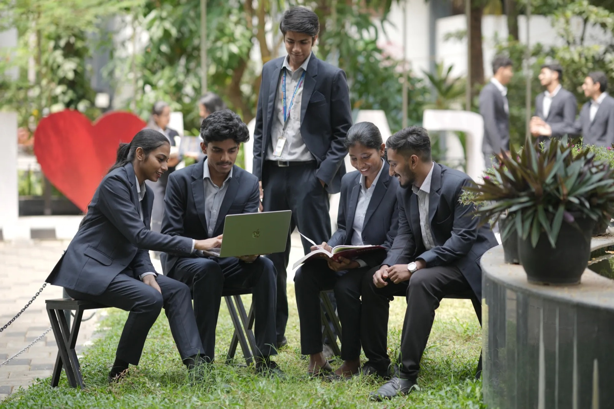

01 · Discover
Start with a real need
Choose a problem worth understanding before jumping to a solution.
Entrepreneurship · MBA pathway
An entrepreneurship-focused pathway within the MBA. Learn to spot an opportunity, test an idea and shape it into a venture with purpose.

About the pathway
This pathway brings entrepreneurial thinking into management education. Students connect business fundamentals with opportunity discovery, customer understanding and the practical choices involved in starting or growing a venture.
It is part of LEAD’s MBA programme, with venture work and a startup project complementing the wider management curriculum.
Notice
Explore people’s needs and the context around a problem.
Experiment
Create a simple offer and learn from real responses.
Reflect
Use what you learn to plan a practical next step.
Learning model
Students build entrepreneurial capability through research, experimentation and reflection, supported by the MBA’s core management learning.
Notice a meaningful need and learn to frame the problem clearly.
Ask better questions, gather feedback and test early assumptions.
Develop a product or service concept and a first business model.
Use evidence to decide what to refine, pursue or rethink.
Venture project
A guided student venture project gives teams a chance to explore a need, shape an offer and learn from customer feedback.
01 · Discover
Choose a problem worth understanding before jumping to a solution.
02 · Validate
Share an early version, listen carefully and refine the idea.
03 · Develop
Present the learning, early results and a considered next step.
Final project
The startup project is one possible MBA capstone direction for students developing an entrepreneurial idea or moving a venture concept toward validation.
Set out the need, audience and context your idea responds to.
Use feedback and research to examine how the offer could work.
Communicate the evidence, learning and plan for further development.
Support on campus
The residential campus gives students space to focus and collaborate, with dedicated entrepreneurship units for the next step.
LEAD Business Incubator
Incubation, mentoring, modelling and funding support under one roof — 28 start-ups being nurtured and 15 ventures graduated.
Explore LEAD-BIInnovation & Entrepreneurship Development Centre
A Kerala Startup Mission initiative giving students room, tools and guidance to turn ideas into prototypes.
Explore LEAD IEDCYour next step
Entrepreneurship is a pathway within the MBA. Explore the programme or apply through the official LEAD MBA portal.